Understanding and Exploiting Optimal Function Inlining
本篇文章是 ASPLOS’2022 的 Best Paper 之一，论文逻辑非常清晰，读起来非常轻松，个人认为是一篇非常好的论文示范。本篇文章主要的工作是系统研究了optimal inline*，并提出了一种达到 *optimal inline 的方式，在此基础上设计实现了一个 autotunner，进行内联优化。本文的测试非常详细，从 micro benchmark 到 real world applications 都有测试，并且测试结果都比较有指导意义。
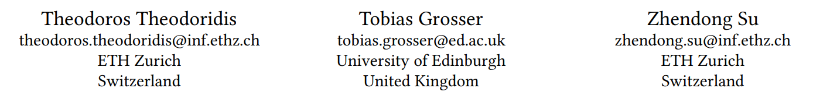
本文的作者如上图所示，主要是来自于 ETH 的研究者。首先声明，我对 inline optimization 并不了解，笔记中可能会有错误，不过这篇论文逻辑非常清晰，即使是我这样的小白，读来能够理解。
Introduction
Motivation
我们都知道 inline 可以给程序带来很多好处，比如减小函数调用的开销（参数传递，栈帧维护等），此外编译器可以对 inline 后的程序进行优化，诸如 dead code 都可以被优化掉，可能会带来性能上的提升或者减小代码的大小。当然，inline 后的程序也有可能会变大，比如函数 C 被 A 和 B 都调用了，inline 后就会有两份 C，在没有优化的情况下自然就变大了。
作者在 introduction 部分用一张图来表示 inline 能为我们带来的好处（只看本文的图表也能理解本文表达的意思和思想，这也是逻辑清楚的一个体现）
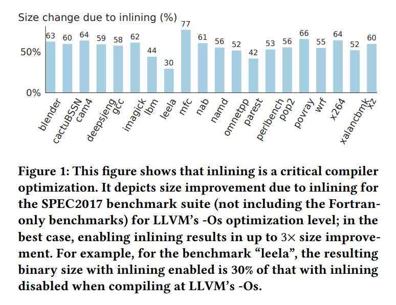
要想利用好 inline 带来的好处，我们需要决定哪里该使用 inline，哪里不开使用。做这种决策不是一件简单的事情，从 2000 年开始，就有学者们在研究 inline 的策略，提出了一些启发式的算法。这些启发式的算法很多也应用在了成熟的编译器上，比如 llvm 和 gcc。
但是一直以来，没有学者研究过 optimal inline 策略，当然这主要是由于 optimal inline 策略是一个 NPC 问题（NP-Complete Problem），没有多项式时间的解决方案。
给定一个程序，要想找到一个 optimal inline 策略，需要遍历该程序的所有函数调用在 inline和 no inline 之间组合的结果，解空间是2^n^
Problem Statement
- 既然 optimal inline 策略是个 NPC 问题，对于它的研究是否还有价值和意义？
- optimal inline 策略在实际应用中是否能够应用？
- 现有的这些启发式 inline 策略和 optimal inline 策略的差距如何？
（这个问题是我，并不是作者在文章中提出来的，但是我认为文章解决的问题就是这样的问题）
Formulate the inlineing search space
Call Graph
学过编译的应该都知道 Call Graph 是什么，没学过的也很容易就能理解什么是 Call Graph。给定一个程序 P，假设 P 中有四个函数，分别为 A、B、C、D，假设 A 调用了 B，B 调用了 C，C 调用了 D。那么 P 的 Call Graph 就如下图所示
Naive Search Space
给定一个程序 P 和 P 的 call graph G，如果 G 有 $|E_G|$ 条边，那么所有 inline 的可能性，也就是搜索空间有 $2^{|E_G|}$
naive 的方法在程序调用链比较小的时候还能奏效，但是程序的函数调用链一旦增加到50以上，几乎就是无法解决的。下图展示的是使用 naive 方法搜索 SPEC2017 的 inline 解空间，可以看到只有 camm4、lbm、mfc三个benchmark 是可以完整的搜素所有的解空间的。
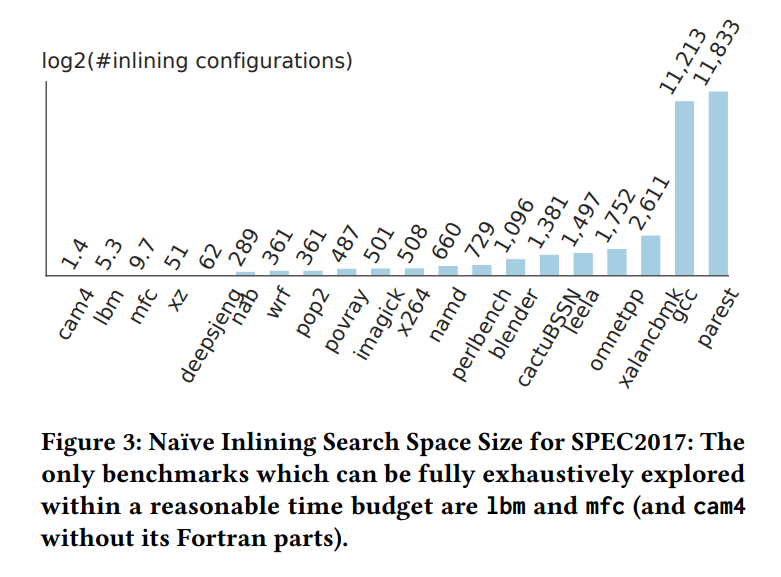
显然，直接无脑使用 naive 的方法是不可取的，我们能不能尽可能减小 inline 的搜索空间，来让更多的程序可以使用 optimal inline 的策略呢？
考虑下面这张图，虽然图中又条边，但是解空间实际上只有 $2^2 + 2^1 = 6$，因为左边和右边是独立的两个连通图，他们可以独立的进行 inline 优化，并不会互相影响优化效果。
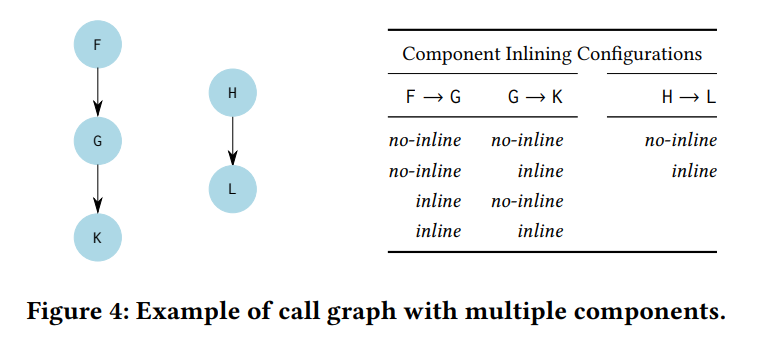
这个发现引出了本文的核心思想，对于独立的连通图，他们的优化彼此互不影响，作者们正是基于这个思想，大大减小了 optimal inline 的 search space
Recursively Partitioned Search Space
我们以一个图来解释什么是 Recursively Partitioned Search Space
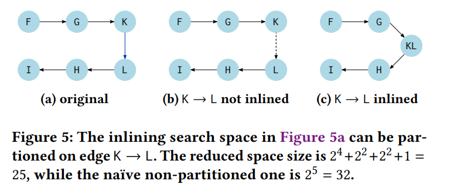
上图（a）的是一个程序的 call graph，对于 $k\rightarrow L$ ，如果我们选择 inline 那么就会变成 图（c）的情形，搜索空间就是 $2^4$；如果我们不 inline，那么就会变成图（b）的情况。注意，$K\rightarrow L$ 不 inline 的效果在 inline 搜索时和分成两个连通图是一样的，显然，$F\rightarrow G \rightarrow K$ 和 $L\rightarrow H \rightarrow I$ 之间的优化彼此独立。那么在情况（b）下，要找到 optimal inline 只需要找到 $F \rightarrow G \rightarrow K$ 的最优解和 $L \rightarrow H \rightarrow I$ 的最优解，就是情况（b）的最优解。因此对于情况（b）的搜索空间就是 $2^2 + 2^2 + 1$，其中 $2^2$ 每个子连通图的搜索空间，而 $+1$ 是整个程序在情况（b）下的解。
因此，图 (a) 所示的程序可以分成 图（b）和图（c）的情况，解空间的个数也就是 $2^4 + 2^2 + 2^2 + 1 = 25$，而如果使用 naive 的方法，解空间的个数是 $2^5 = 32$
上面的这种 partition 方法可以递归的在子树上进行，因此能大大缩减 inline 解空间的数量。
Analyze Optimal Inlining on SPEC2017
这种方法能否在实际中进行应用呢？作者们在 SPEC2017 上进行了 optimal inline 的实验，并从实验结果发现了一些规律（这将会在下一节介绍）。
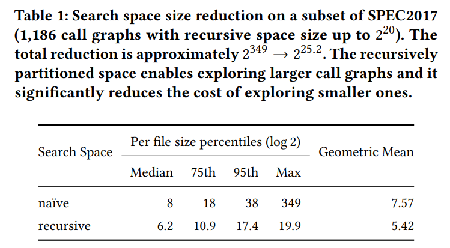
上表展示的是在 SPEC2017 benchmark 上使用 naive search space 和 recursive partitioned search space 的解大小，显然 naive 的解空间无法用现用的资源计算出来，但是 recursive partitioned search space 就能够接受，最大也只有只有 $2^{20}$。
作者们还对比了 optimal inline 和 LLVM 启发式算法在 SPEC2017 上的优化效果，从下图可以看到，LLVM 的启发式算法在半数情况下能找到最优的 inline 策略，其他部分的优化效果比 optimal inline 略差，少部分 inline 后的目标文件大小增长比较大，最大的膨胀了 281%。
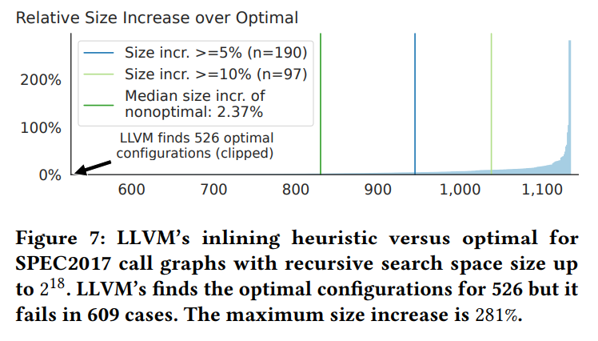
此外，作者们还研究了 optimal inline 在 SPEC2017 的 call graph 上的 inline chain depth，结果如下图所示。
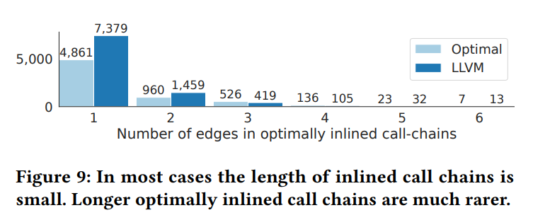
可以看到，大部分的 inline chain 的深度只有 1，深度大于 4 的 inline chain 非常非常少。也就是说，在决定一个函数是否要 inline 的时候，大部分情况下只需要看这个函数 inline 和 no inline 哪一种情况优化效果好就可以了。
由此，本文作者又提出了一个基于局部 inline 的 autotuner，这个 autotuner 的工作流程非常简单：给定一个连通的 call graph，遍历这个 call graph 的每一条边，比较将这个边 inline 和 no inline 的编译优化效果，选择优化效果大。
上述算法只考虑深度为 1 的 inline chain，对于深度大于 1，比如深度为 2、3、4 的 inline chain，也是可以用同样的算法执行的，区别在于深度为 2 的 autotuner 的初始值是深度为 1 的 autotuner 结果。换一句话说，就是 autotuner 可以执行多个回合以期找到尽可能优的 inline 解。
Evaluation
本文的 evaluation 主要测试的是 autotuner，optimal inline 策略虽然在 benchmark 上可以执行，但是耗时比较久，并且在真实场景下应用也比较困难（search space 难以下降到可接受范围）。
在测试中，主要考虑一下三点：
- autotuner 和 LLVM 的启发式算法在 SPEC2017 上优化效果怎么样？
- 多回合的 autotuner 优化效果如何？
- autotuner 能否在真实场景里应用？
Autotuner V.S. LLVM’s heuristic inline strategy
autotuner 和 LLVM 启发式算法的测试结果如下图所示，可以看到，大部分 benchmark 上，autotuner 的优化效果优于 LLVM 启发式算法，也有部分 benchmark 上 autotuner 的优化效果不如 LLVM，当然，这个其实可以采取两种策略都进行测试，并选择较优的方案。
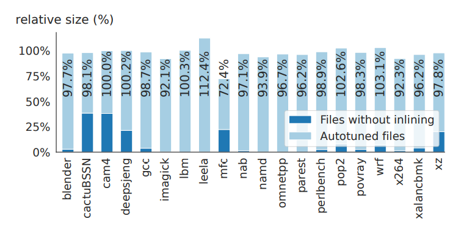
autotuner 的初始化状态还可以设置为 LLVM 的优化结果，这样可以在 LLVM 的启发式算法之上进行 local tuning，当然测试结果也并不一定都好于其它初始状态（比如默认全部 no inline 的初始状态），比如下表的 benchmark 测试中，使用 clean state 就要优于使用 LLVM initialization。
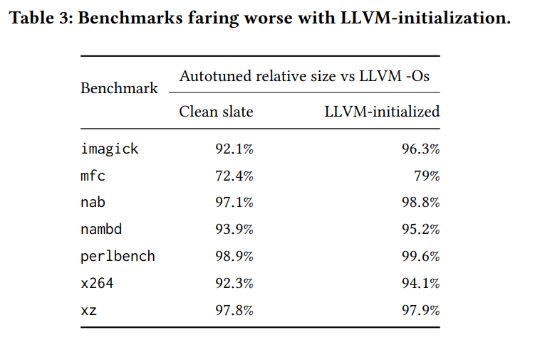
Multi-round autotuner
作者们还对 multi-round autotuner 进行了测试，因为在 optimal inline 测试下，还是存在部分 inline chain 的深度大于 1 的。测试结果如下图所示
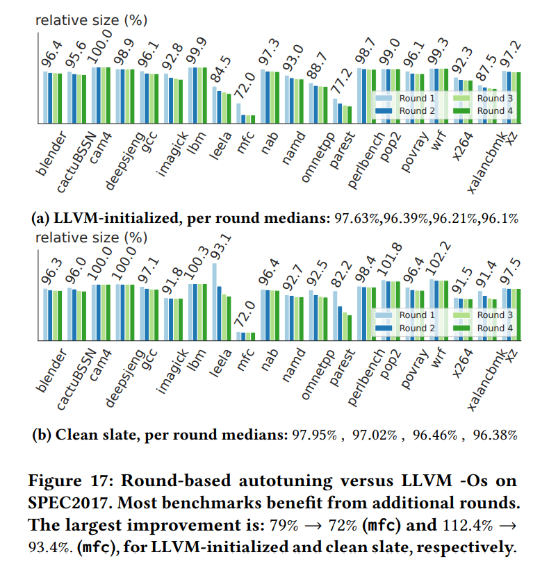
可以看到，大部分程序在多个 round 之后优化效果都有提升。
Real world applications
本文作者还在 LLVM 和 SQLite 上进行了 inline 优化测试。 在 LLVM 的测试上，一个 round 大约要运行 44 ~ 53 小时，不过优化效果也很明显，3 个回合后，二进制大小可以减少 15.21%。在 SQLite 上，每个 round 运行大概 90 分钟，优化后二进制大小是 LLVM 编译出来的二进制大小的 89.7%